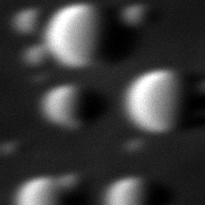
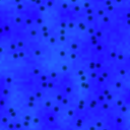

Procedures and guides
Printable procedures with figures computed by SEM-view. Free to use for training; follow your facility's procedures and the manufacturer's documentation. For the TEM, see the TEM-view guides.

SOP-01 · SEM column alignmentGun check, beam conditions, aperture centering with the wobbler, focus and stigmation, resolution and magnification checks. 7 pages, PDF.

SOP-02 · Analytical set-up: EDS, EBSD and CLCharging and probe current, X-ray spectroscopy, orientation mapping and cathodoluminescence. 6 pages, PDF.